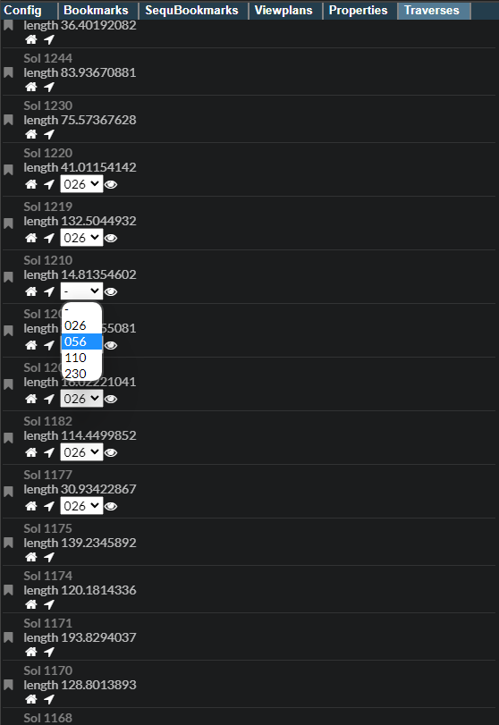

RIMFAX Traverses
RIMFAX stands for Radar Imager for Mars’ Subsurface Experiment. It is a ground-penetrating radar instrument that was carried to Mars on NASA’s Perseverance rover. The user can load the RIMFAX traverses indicating that RIMFAX was active. Those traverses align with subsections of the corresponding rover traverse that displays the path of the rover.
The user can load a RIMFAX traverse using the Extra panel in the menu.

Loading RIMFAX Surfaces
The user can load and display the RIMFAX images using the Import Surfaces button.

The implementation expects a folder structure generated with the traverse exporter developed at JR:
Rimfax Data/
├── RIMFAX_traverse.json
├── 0000/
│ ├── 0001/
│ │ ├── 240/
│ │ │ ├── ..._SOL0001_..._noaxis.png
│ │ │ ├── rimfax.mtl
│ │ │ └── rimfax.obj
│ │ ├── 214/
│ │ ├── 078/
│ │ └── 026/
│ ├── 0002/
│ │ ├── ..
│ │ └── ..
│ └── 0003/
│ └── ..
├── 0100/
│ ├── 0105/
│ ├── 0106/
...
├── 0200/
On the top levels the sols are divided on two granularity levels, the last folder name encodes the RIMFAX mode: For each rimfax traverse usually different wavebands were used to generate the RIMFAX data resulting in multiple images for each RIMFAX traverse.
After selecting the root folder, the user sees the RIMFAX surface in the render view. The sols of the selected traverse in the attribute window are listed in the Sol panel. The user can set the RIMFAX mode in this list for each sol.

Limitations
RIMFAX surface loading requires approximately three times more main memory than the actual file size. To load only the necessary surfaces, the best approach is to duplicate the folder containing them and manually remove the subfolders with surface models that are not needed in PRo3D for the analysis.